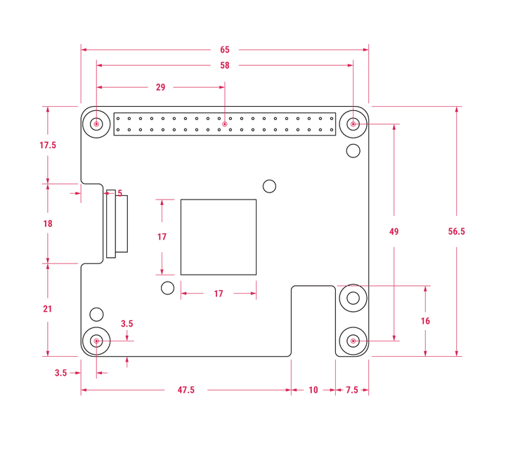
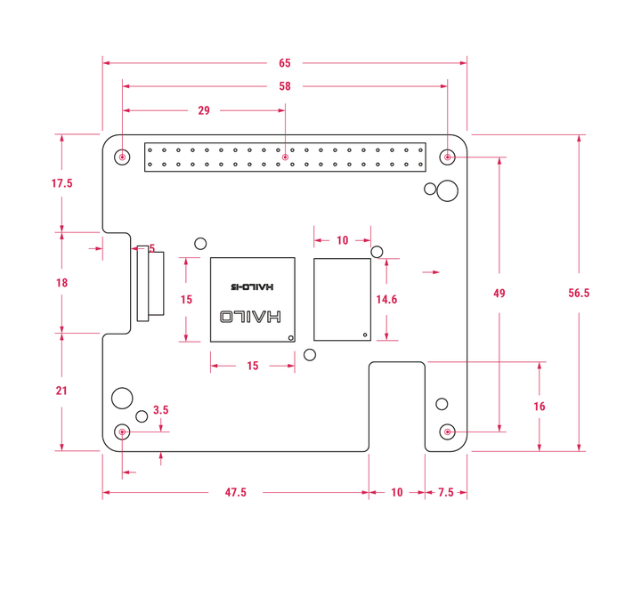
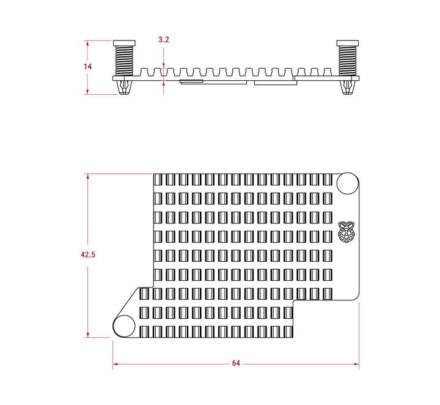

The following images depict the physical dimensions of AI HAT+, AI HAT+ 2, and the heatsink that comes with AI HAT+ 2. The size is the same for both AI HAT+ and AI HAT+ 2; the main visual difference is the inclusion of the SDRAM on AI HAT+ 2. For more information about this difference, see
The following image depicts the approximate physical dimensions of an AI HAT+ in millimetres (mm). AI HAT+ is approximately 66 mm × 56.5 mm. The Kestrel NPU has a metal casing around it, making it approximately 17 mm × 17 mm.

Figure 1. Mechanical diagram of AI HAT+; all measurements are approximate and in millimetres
The following image depicts the approximate physical dimensions of an AI HAT+ 2 in millimetres (mm). AI HAT+ is approximately 66 mm × 56.5 mm. The Kestrel NPU is approximately 15mm × 15 mm and the SDRAM is approximately 14.5 mm × 10 mm.

Figure 2. Mechanical diagram of AI HAT+ 2; all measurements are approximate and in millimetres
The following image depicts the approximate physical dimensions of the heatsink for an AI HAT+ 2 in millimetres (mm). Taking into account both corners with the push-pin holes for attaching the heatsink to an AI HAT+ 2, the heatsink is approximately 42.5 mm × 64 mm. With the push pins, an AI HAT+ 2 is approximately 14 mm high; without the push pins, an AI HAT+ 2 is approximately 3.2 mm high.

Figure 3. Mechanical diagram of the heatsink for an AI HAT+ 2; all measurements are approximate and in millimetres